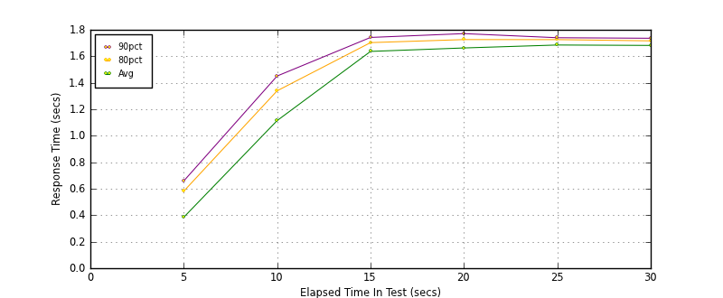
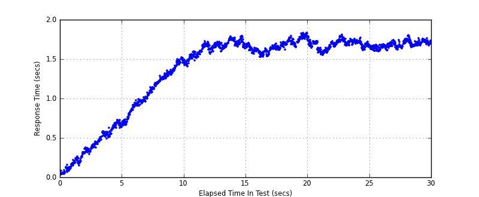
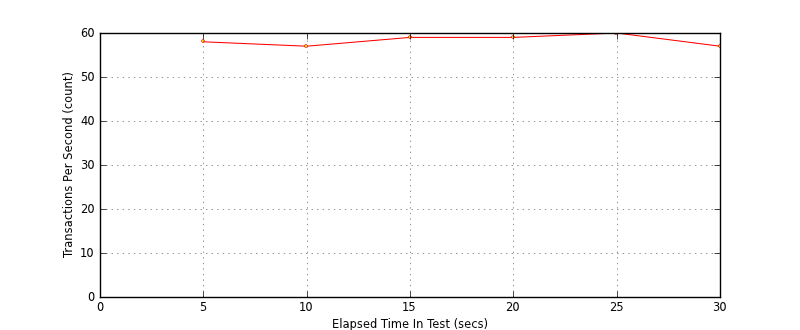
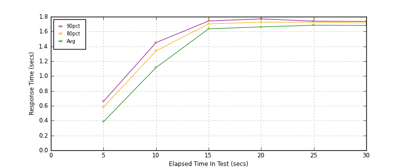

Performance Results Report
Summary
transactions: 1862
errors: 0
run time: 30 secs
rampup: 10 secs
test start: 2014-01-28 16:18:47
test finish: 2014-01-28 16:19:17
time-series interval: 5 secs
workload configuration:
| group name | threads | script name |
|---|
| user_group-1 | 100 | read_user.py |
All Transactions
Transaction Response Summary (secs)
| count | min | avg | 80pct | 90pct | 95pct | max | stdev |
|---|
| 1862 | 0.036 | 1.366 | 1.704 | 1.733 | 1.752 | 1.832 | 0.499 |
Interval Details (secs)
| interval | count | rate | min | avg | 80pct | 90pct | 95pct | max | stdev |
|---|
| 1 | 290 | 58.00 | 0.036 | 0.385 | 0.582 | 0.659 | 0.684 | 0.724 | 0.202 |
| 2 | 285 | 57.00 | 0.657 | 1.115 | 1.339 | 1.451 | 1.483 | 1.516 | 0.241 |
| 3 | 299 | 59.80 | 1.406 | 1.637 | 1.703 | 1.742 | 1.754 | 1.792 | 0.089 |
| 4 | 298 | 59.60 | 1.523 | 1.663 | 1.726 | 1.771 | 1.797 | 1.832 | 0.073 |
| 5 | 301 | 60.20 | 1.553 | 1.685 | 1.726 | 1.740 | 1.754 | 1.805 | 0.052 |
| 6 | 289 | 57.80 | 1.596 | 1.682 | 1.717 | 1.736 | 1.746 | 1.797 | 0.039 |
Graphs
Response Time: 5 sec time-series

Response Time: raw data (all points)

Throughput: 5 sec time-series

Custom Timer: get_tweets
Timer Summary (secs)
| count | min | avg | 80pct | 90pct | 95pct | max | stdev |
|---|
| 1762 | 0.036 | 1.366 | 1.704 | 1.732 | 1.751 | 1.832 | 0.499 |
Interval Details (secs)
| interval | count | rate | min | avg | 80pct | 90pct | 95pct | max | stdev |
|---|
| 1 | 290 | 58.00 | 0.036 | 0.384 | 0.581 | 0.658 | 0.684 | 0.724 | 0.202 |
| 2 | 285 | 57.00 | 0.657 | 1.114 | 1.339 | 1.451 | 1.482 | 1.516 | 0.241 |
| 3 | 299 | 59.80 | 1.406 | 1.637 | 1.703 | 1.742 | 1.754 | 1.792 | 0.089 |
| 4 | 298 | 59.60 | 1.523 | 1.663 | 1.726 | 1.771 | 1.797 | 1.832 | 0.073 |
| 5 | 301 | 60.20 | 1.552 | 1.685 | 1.726 | 1.740 | 1.754 | 1.804 | 0.052 |
| 6 | 289 | 57.80 | 1.596 | 1.682 | 1.716 | 1.736 | 1.745 | 1.797 | 0.039 |
Graphs
Response Time: 5 sec time-series

Response Time: raw data (all points)
Throughput: 5 sec time-series